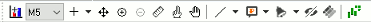
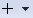
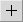
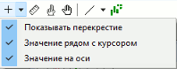
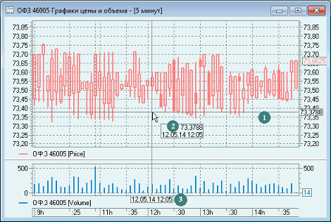

Для работы с графиками рекомендуется включить на панели инструментов панель «График»:

Назначение кнопок на панели «График»:
| Кнопка | Назначение |
|---|---|
 |
Добавить новый график в выбранное окно (диаграмму) |
| Изменить величину интервала | |
|  | Настроить отображение информации о положении курсора в области построения графика. Описание см. ниже |
| Измерить расстояние между точками на графике | |
| Включить режим ввода заявки из окна диаграммы. Если настройка выключена, то невозможно перемещать и выставлять заявки из окна диаграммы | |
| Перемещать график с помощью «захвата» мышью | |
| Рисовать трендовые линии и фигуры | |
| Рисовать трендовую линию | |
|
Рисовать горизонтальную линию |
| Рисовать вертикальную линию | |
|
Рисовать прямоугольник |
| Рисовать треугольник | |
| Рисовать эллипс | |
| Рисовать дуги Фибоначчи | |
|
Рисовать скоростные линии |
| Рисовать веер Фибоначчи | |
|
Рисовать уровни коррекции Фибоначчи |
|
Рисовать временные зоны Фибоначчи |
|
Рисовать канал |
| Рисовать глубину рынка | |
| Нанести метку на график | |
|
Поместить на график текстовую метку |
|
Поместить на график заметку |
|
Поместить на график текстовую выноску |
|
Поместить на график выноску с указанием цены |
|
Поместить на график изображение, загруженное из файла |
| Поместить на график изображение, выбранное из набора встроенных картинок | |
| Выключить / включить отображение на графике трендовых линий, фигур и меток | |
| Закрепить выбранный на панели инструмент | |
| Показывать данные Авточартист (описание работы с данными Авточартист см. в Руководстве пользователя «Программный интерфейс системы Autochartist») |

На панели расположена кнопка "Перекрестие" , которая включает отображение информации о положении курсора в области построения графика. При включении кнопки «Перекрестие» автоматически появляется выпадающее меню, из которого пользователь выбирает способ отображения координат курсора.

Возможен выбор одного или нескольких способов. Если ни один из способов не выбран, то кнопка «Перекрестие» не активна. При отключении кнопки «Перекрестие» настройки пользователя сохраняются. Возможные способы отображения координат курсора:
- «Показывать перекрестие» - включает отображение линий перекрестия с осями (1) .
- «Значение рядом с курсором» - информация отображается рядом с курсором в виде прямоугольника (2) со значением в формате:
Если на графике есть привязка к левой и к правой оси (в случае расположения в одном окне двух графиков), то значение указывается в формате:[значение оси]
ДД.ММ.ГГ ЧЧ:ММ
[значение левой оси] [значение правой оси]
ДД.ММ.ГГ ЧЧ:ММ
- «Значение на оси» - информация отображается на осях в виде прямоугольных выносок (3), в которых указываются значения даты и времени (ось абсцисс) и соответствующего им значения (ось ординат). Выноски перемещаются по осям при движении курсора по графику.

См. также: